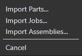
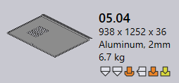

To begin with, load parts into the Part Library. This can be done by
● Selecting Open -> Import option from the Part Library. This option can be used to import Parts, Jobs and Assemblies from the local and remote directories/folders. This option allows importing parts individually or in batches.
● Drag and drop a part into Praxis Part Library directly.

● After successful import, parts are auto-tooled and tooling status is updated.
● Material and Part details are updated.